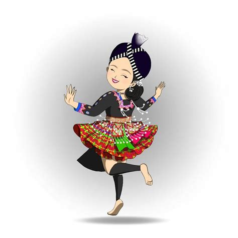
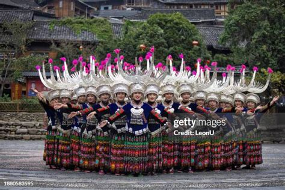

Dance
traditional hmong danceI have been apart of a traditional hmong dance team for about 6 years. I was co captain and enjoyed it a lot. This year however I've decided to stop due to the rigorous practice schedule.

background
Hmong dance was created a while ago in order to keep our culture alive. There are various hand movements to create intricate moves, in fact many dances now try to incorporate modern moves as well. Hmong dance is very similar to thai and lao dancing. There are dance competitons held where you could be able to win tousands of dollars. It is a good way to embrace the hmong heritage, connct to your past, tell stories through dance, and remeber your history.
Hmong dance in the villages
